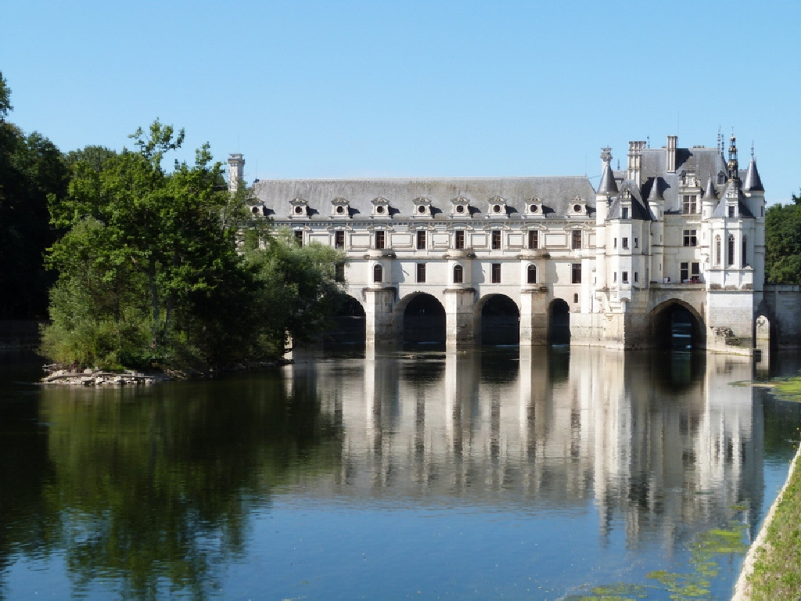

Des sites touristiques
Le château de Chenonceau
Voici le premier site touristique Voici le premier site touristique Voici le premier site touristique Voici le premier site touristique Voici le premier site touristique Voici le premier site touristique Voici le premier site touristique Voici le premier site touristique Voici le premier site touristique
Le château de Chenonceau est situé dans la commune de Chenonceaux en Indre-et-Loire (France). Il fait partie des châteaux communément appelés les châteaux de la Loire.
Chenonceau est construit, aménagé et transformé par des femmes très différentes de par leur tempérament. Il est édifié par Katherine Briçonnet en 1513, enrichi par Diane de Poitiers et agrandi sous Catherine de Médicis. Il devient un lieu de recueillement avec la reine blanche Louise de Lorraine, puis il est sauvegardé par Louise Dupin au cours de la Révolution française et enfin, métamorphosé par madame Pelouze. C'est ainsi qu'il est surnommé le château des Dames, car cette empreinte féminine est partout présente, le préservant des conflits et des guerres pour en faire depuis toujours un lieu de paix. Château meublé, décoré de rares tapisseries et peintures anciennes, c'est le monument historique privé le plus visité de France, serti de plusieurs jardins d'agrément, un parc et un domaine viticole.
source wikipedia

Le Colisée
Voici le second site touristique Voici le second site touristique Voici le second site touristique Voici le second site touristique Voici le second site touristique Voici le second site touristique Voici le second site touristique Voici le second site touristique Voici le second site touristique
Le Colisée, à l'origine amphithéâtre Flavien (Colosseo en italien), est un immense amphithéâtre ovoïde situé dans le centre de la ville de Rome, entre l'Esquilin et le Cælius, le plus grand jamais construit dans l'empire romain. Il est l'une des plus grandes œuvres de l'architecture et de l'ingénierie romaines.
Sa construction, juste à l'est du Forum Romain, a commencé entre 70 et 72 ap. J.-C., sous l'empereur Vespasien, et s'est achevée en 80 sous Titus. D'autres modifications ont ensuite été apportées au cours du règne de Domitien (81-96). Le nom d'amphithéâtre Flavien dérive du nom de famille (gens Flavii) des deux empereurs Vespasien et Titus.
source wikipedia

Le pont du Gard
Voici le second site touristique Voici le second site touristique Voici le second site touristique Voici le second site touristique Voici le second site touristique Voici le second site touristique Voici le second site touristique Voici le second site touristique Voici le second site touristique
Le pont du Gard est un pont-aqueduc romain à trois niveaux, situé à Vers-Pont-du-Gard entre Uzès et Remoulins, non loin de Nîmes, dans le département du Gard (France). Il enjambe le Gardon, ou Gard. Probablement bâti dans la première moitié du Ier siècle, il assurait la continuité de l'aqueduc romain qui conduisait l’eau d’Uzès à Nîmes. D'après les dernières recherches, il aurait cessé d'être utilisé au début du VIe siècle.
Au Moyen Âge, les piles du second étage furent échancrées et l'ouvrage fut utilisé comme pont routier. L'architecture exceptionnelle du pont du Gard attira l'attention dès le XVIe siècle, qui dès lors bénéficia de restaurations régulières destinées à préserver son intégrité. Un pont routier lui fut accolé en 1743-1747. Plus haut pont-aqueduc connu du monde romain, il fait l'objet d'un classement au titre des monuments historiques par la liste de 1840 et a été inscrit sur la liste du patrimoine mondial de l'Unesco en décembre 1985
source wikipedia